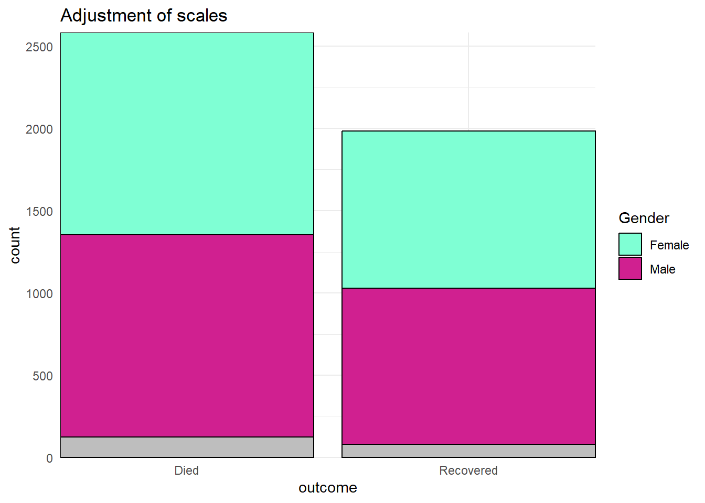
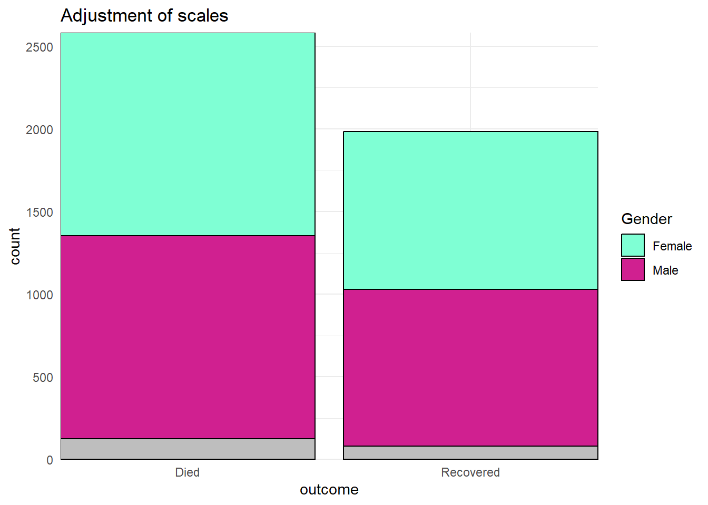
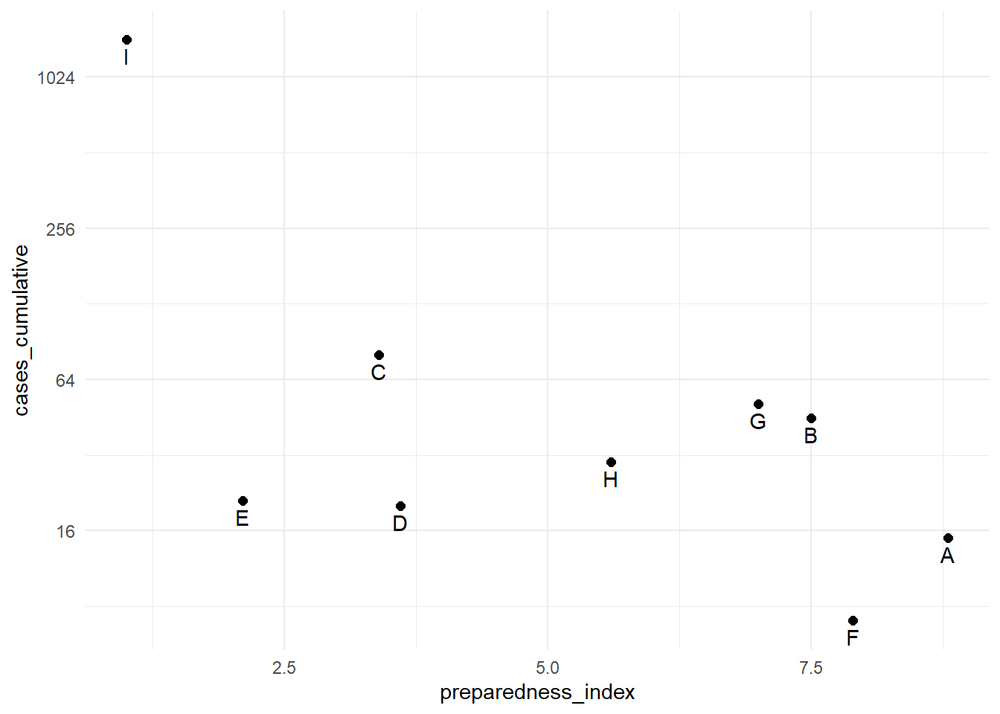
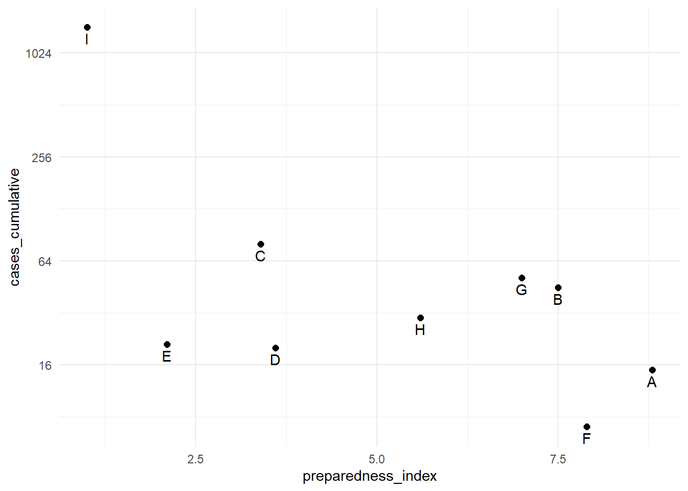
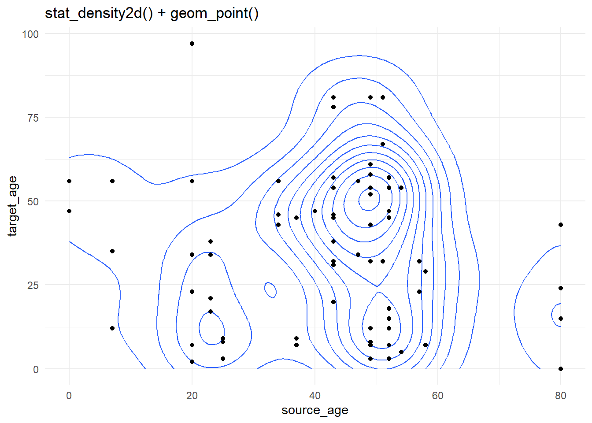

30 Traçage de données continues

Cette page traite du traçage approprié de données continues, telles que l’âge, les mesures cliniques et la distance. Nous nous concentrons sur l’utilisation de ggplot2 (qui fait partie de la famille de paquets tidyverse), mais nous décrivons aussi brièvement les fonctions de traçage de base de R.
Les visualisations couvertes ici incluent :
- Tracés pour une variable continue :
- Histogramme, un graphique classique pour présenter la distribution d’une variable continue.
- Graphique en boîte (également appelé boîte et moustaches), pour montrer les 25ème, 50ème et 75ème percentiles, les extrémités de la distribution et les valeurs aberrantes (limitations importantes).
- Graphique de gigue, pour montrer toutes les valeurs sous forme de points qui sont “gigueux” de sorte qu’ils peuvent (presque) tous être vus, même si deux ont la même valeur.
- Violin plot, montre la distribution d’une variable continue basée sur la largeur symétrique du “violon”.
- Sina plot, est une combinaison de jitter et de violin plot, où les points individuels sont montrés mais dans la forme symétrique de la distribution (via le paquet ggforce).
- Scatter plot pour deux variables continues.
- Graphes de chaleur pour trois variables continues (lien vers la page Graphiques thermiques ).
30.1 Préparation
La préparation comprend le chargement des paquets pertinents, ici ggplot2 et dplyr (tous deux faisant partie de tidyverse), et l’assurance que vos colonnes de données sont de la bonne classe.
Chargement des paquets
Ce morceau de code montre le chargement des paquets requis pour les analyses. Dans ce manuel, nous mettons l’accent sur p_load() de pacman, qui installe le paquet si nécessaire et le charge pour l’utiliser. Vous pouvez aussi charger les paquets installés avec library() de base R. Voir la page sur R - les bases pour plus d’informations sur les paquets R.
Note : Le méga-paquet tidyverse comprend les paquets ggplot2 et dplyr parmi beaucoup d’autres (par exemple stringr, tidyr, et forcats).
pacman::p_load(
rio, # importation et exportation de données
here, # chemins de fichiers relatifs
tidyverse # inclut ggplot2 et dplyr
)Importer des données
Pour les exemples de cette page, nous importons la linelist nettoyée des cas d’une épidémie d’Ebola simulée. Si vous voulez suivre, cliquez pour télécharger la linelist “propre” (en tant que fichier .rds). Importez des données avec la fonction import() du paquet rio (elle gère de nombreux types de fichiers comme .xlsx, .csv, .rds - voir la page Importer et exporter des données pour plus de détails).
# Importez la liste de cas
linelist <- import("linelist_cleaned.rds")Les 50 premières lignes de la linelist sont affichées ci-dessous. Nous allons nous concentrer sur les variables continues age, wt_kg (poids en kilos), ct_blood (CT, valeurs de seuil de cycle), et days_onset_hosp (différence entre la date d’apparition des symptômes et la date d’hospitalisation).
Classe de colonnes
Assurez-vous que les colonnes continues sont correctement classées dans R comme classe numérique. Nous utilisons ci-dessous mutate() et as.numeric() pour assurer la classe des colonnes qui sont importantes pour notre analyse. Voir la page Nettoyage de données et fonctions essentielles pour plus de détails.
linelist <- linelist %>%
mutate(
across( # mutate plusieurs colonnes à la fois
.cols = c(age, ct_blood, days_onset_hosp, wt_kg), # colonnes à transformer
.fns = as.numeric # fonction à utiliser (sans parenthèses)
)
) Remarque : Vous devez avoir effectué plusieurs vérifications des données avant cette étape, y compris la vérification de l’absence de données. Consultez la page Données manquantes pour obtenir des conseils sur ces analyses.
30.1.1 Une variable continue
Histogrammes
Vous trouverez ci-dessous le code pour générer des histogrammes, qui regroupent les données continues en plages et les affichent dans des barres adjacentes de hauteur variable. Ceci est fait en utilisant geom_histogram(). Voir la section “Tracé des barres” de la page ggplot basics pour comprendre la différence entre geom_histogram(), geom_bar(), et geom_col().
Nous allons montrer la distribution des âges des cas. Dans mapping = aes(), spécifiez la colonne dont vous voulez voir la distribution. Vous pouvez affecter cette colonne à l’axe des x ou des y.
Les lignes seront assignées à des “bacs” basés sur leur âge numérique, et ces bacs seront représentés graphiquement par des barres. Si vous spécifiez un nombre de bins avec l’esthétique de tracé bins =, les points de rupture sont espacés de manière égale entre les valeurs minimum et maximum de l’histogramme. Si bins = n’est pas spécifié, un nombre approprié de bins sera deviné et ce message sera affiché après le tracé :
## `stat_bin()`` utilisant `bins = 30`. Choisissez une meilleure valeur avec `binwidth`.Si vous ne voulez pas spécifier un nombre de bins à bins =, vous pouvez alternativement spécifier binwidth = dans les unités de l’axe. Nous donnons quelques exemples montrant différents bins et largeurs de bins :
# A) Histogramme régulier
ggplot(data = linelist, aes(x = age))+ # fournir la variable x
geom_histogram()+
labs(title = "A) Histogramme par défaut (30 bins)")
# B) Plus de bins
ggplot(data = linelist, aes(x = age))+ # fournit la variable x
geom_histogram(bins = 50)+
labs(title = "B) Définir à 50 bins")
# C) Moins de bins
ggplot(data = linelist, aes(x = age))+ # fournir la variable x
geom_histogram(bins = 5)+
labs(title = "C) Définir à 5 bins")
# D) Plus de bacs
ggplot(data = linelist, aes(x = age))+ # fournir la variable x
geom_histogram(binwidth = 1)+
labs(title = "D) largeur de bande de 1")
# E) Histogrammes en couches avec différentes largeurs de bande
ggplot(data = linelist, aes(x = age))+ # fournir la variable x
geom_histogram(
binwidth = 2) + # La couche sous-jacente a une largeur de bin de 2
geom_histogram(
binwidth = 1, # La couche supérieure a une largeur de bin de 1
alpha = 0.4, # Définir la couche supérieure pour qu'elle soit légèrement transparente
fill = "blue")+
labs(title = "E) Histogrammes en couches avec différentes largeurs de bande") 

Pour obtenir des proportions lissées, vous pouvez utiliser `geom_density()`` :
# Fréquence avec axe de proportion, lissée
ggplot(data = linelist, mapping = aes(x = age), fill = gender) +
geom_density(binwidth = 2, size = 2, alpha = 0.2)+
labs(title = "Proportionnelle, lissée avec geom_density()")
Pour obtenir un histogramme “empilé” (d’une colonne continue de données), vous pouvez effectuer l’une des opérations suivantes :
- Utilisez
geom_histogram()avec l’argumentfill =dansaes()et affecté à la colonne de regroupement, ou bien
- Utilisez
geom_freqpoly(), qui est probablement plus facile à lire (vous pouvez toujours définirbinwidth =).
- Pour voir les proportions de toutes les valeurs, définissez le paramètre
y = after_stat(density)(utilisez exactement cette syntaxe - elle n’a pas été modifiée pour vos données). Note : ces proportions seront affichées par groupe.
Chacune d’entre elles est présentée ci-dessous (*notez l’utilisation de color = par rapport à fill = dans chacune) :
# Histogramme "empilé"
ggplot(data = linelist, mapping = aes(x = age, fill = gender)) +
geom_histogram(binwidth = 2)+
labs(title = "Histogramme 'empilé'")
# Fréquence
ggplot(data = linelist, mapping = aes(x = age, color = gender)) +
geom_freqpoly(binwidth = 2, size = 2)+
labs(title = "Freqpoly")
# Fréquence avec axe de proportion
ggplot(data = linelist, mapping = aes(x = age, y = after_stat(density), color = gender)) +
geom_freqpoly(binwidth = 5, size = 2)+
labs(title = "Freqpoly proportionnelle")
# Fréquence avec axe de proportion, lissée
ggplot(data = linelist, mapping = aes(x = age, y = after_stat(density), fill = gender)) +
geom_density(binwidth = 2, size = 2, alpha = 0.2)+
labs(title = "Proportionnelle, lissée avec geom_density()")
Si vous voulez vous amuser un peu, essayez geom_density_ridges du paquet ggridges ( vignette ici.
Pour en savoir plus sur les histogrammes, consultez la page tidyverse page sur geom_histogram().
Diagrammes en boîte
Les diagrammes en boîte sont courants, mais ils ont des limites importantes. Ils peuvent masquer la distribution réelle - par exemple, une distribution bimodale. Voir cette galerie de graphiques R et cet article data-to-viz pour plus de détails. Cependant, ils affichent joliment l’écart interquartile et les valeurs aberrantes, et peuvent donc être superposés à d’autres types de graphiques qui montrent la distribution de manière plus détaillée.
Voici l’anatomie d’un box plot ( source de l’image).

Lorsque vous utilisez geom_boxplot() pour créer un box plot, vous n’indiquez généralement qu’un seul axe (x ou y) dans aes(). L’axe spécifié détermine si les tracés sont horizontaux ou verticaux.
Dans la plupart des géométries, vous créez un graphique par groupe en faisant correspondre une esthétique comme color = ou fill = à une colonne dans aes(). Cependant, pour les boxplot, vous pouvez le faire en assignant la colonne de regroupement à l’axe non assigné (x ou y). Ci-dessous se trouve le code pour un boxplot de toutes les valeurs d’âge dans l’ensemble de données, et ensuite le code pour afficher un box plot pour chaque sexe (non manquant) dans l’ensemble de données. Notez que les valeurs NA (manquantes) apparaîtront comme un box plot séparé, sauf si elles sont supprimées. Dans cet exemple, nous avons également défini le fill sur la colonne outcome pour que chaque diagramme soit d’une couleur différente - mais ce n’est pas nécessaire.
# A) Diagramme numérique global
ggplot(data = linelist)+
geom_boxplot(mapping = aes(y = age))+ # seulement l'axe des y cartographié (pas les x)
labs(title = "A) Boxplot global")
# B) Box plot par groupe
ggplot(data = linelist, mapping = aes(y = age, x = gender, fill = gender)) +
geom_boxplot()+
theme(legend.position = "none")+ # supprimer la légende (redondante)
labs(title = "B) Boxplot par sexe")  

Pour le code permettant d’ajouter un box plot sur les bords d’un nuage de points (tracés “marginaux”), voir la page Trucs et Astuces avec ggplot.
Diagrammes de violon, de gigue et de sina
Ci-dessous se trouve le code pour créer des graphiques de violon (geom_violin) et des graphiques de gigues (geom_jitter) pour montrer des distributions. Vous pouvez spécifier que le remplissage ou la couleur est également déterminé par les données, en insérant ces options dans aes().
# A) Graphe de gigue par groupe
ggplot(data = linelist %>% drop_na(outcome), # supprimer les valeurs manquantes
mapping = aes(y = age, # Variable continue
x = outcome, # variable de groupement
color = outcome))+ # Variable de couleur
geom_jitter()+ # Créez le graphique en forme de violon
labs(title = "A) graphique de gigue par sexe")
# B) Tracé de violon par groupe
ggplot(data = linelist %>% drop_na(outcome), # Suppression des valeurs manquantes
mapping = aes(y = age, # Variable continue
x = outcome, # variable de regroupement
fill = outcome))+ # remplir la variable (couleur)
geom_violin()+ # crée le graphique en forme de violon
labs(title = "B) tracé du violon par sexe") 
On peut combiner les deux en utilisant la fonction geom_sina() du paquet ggforce. Le sina plot les points de gigue dans la forme du violin plot. Lorsqu’ils sont superposés sur le tracé du violon (en ajustant les transparences), ils peuvent être plus faciles à interpréter visuellement.
Le tracé A) à gauche montre une superposition basique de geom_violin() et geom_sina(). Le tracé B montre un peu plus d’efforts dans l’apparence du ggplot (voir les commentaires en ligne).
pacman::p_load(ggforce)
# A) Tracé Sina par groupe
ggplot(data = linelist %>% drop_na(outcome),
aes(y = age, # variable numérique
x = outcome)) + # variable de groupe
geom_violin()+ # création de la base du tracé violine
geom_sina()+ # ajout de points de gigue en forme de violon
labs(title = "A) tracé violon et sina par sexe")
# A) Tracé Sina par groupe
ggplot(
data = linelist %>% drop_na(outcome),
aes(y = age, # variable numérique
x = outcome)) + # variable de groupe
geom_violin(
aes(fill = outcome), # fill (couleur du fond du violon)
color = "white", # contour blanc
alpha = 0.2)+ # transparence
geom_sina(
size=1, # modification de la taille de la gigue
aes(color = outcome))+ # couleur (couleur des points)
scale_fill_manual( # Définir le remplissage pour le fond du violon par death/recover
values = c( "Death" = "#bf5300",
"Recover" = "#11118c")) +
scale_color_manual( # Définir les couleurs pour les points par death/recover
values = c( "Death" = "#bf5300",
"Recover" = "#11118c")) +
theme_minimal() + # Supprimer le fond gris
theme(legend.position = "none") + # Suppression de la légende inutile
labs(title = "B) tracé du violon et du sina par sexe, avec formatage supplémentaire") 
.
30.2 Deux variables continues
En suivant une syntaxe similaire, geom_point() vous permettra de tracer deux variables continues l’une contre l’autre dans un graphique en nuage de points. Ceci est utile pour montrer les valeurs réelles plutôt que leurs distributions.
Un diagramme de dispersion basique de l’âge par rapport au poids est montré dans (A). Dans (B), nous utilisons à nouveau facet_grid() pour montrer la relation entre deux variables continues dans la linelist.
# Diagramme de dispersion de base du poids et de l'âge
ggplot(data = linelist,
mapping = aes(y = wt_kg, x = age))+
geom_point() +
labs(title = "A) Diagramme de dispersion du poids et de l'âge")
# Diagramme de dispersion du poids et de l'âge par sexe et résultat Ebola
ggplot(data = linelist %>% drop_na(gender, outcome), # le filtre retient le genre/résultat non manquant
mapping = aes(y = wt_kg, x = age))+
geom_point() +
labs(title = "B) Diagramme de dispersion du poids et de l'âge en fonction du sexe et de l'issue")+
facet_grid(gender ~ outcome) 
Trois variables continues
Vous pouvez afficher trois variables continues en utilisant l’argument fill = pour créer un graphique thermique. La couleur de chaque “cellule” reflétera la valeur de la troisième colonne de données continues. Voir la page sur les [Heat plots] pour plus de détails et plusieurs exemples.
Il existe des moyens de faire des tracés 3D dans R, mais pour l’épidémiologie appliquée, ceux-ci sont souvent difficiles à interpréter et donc moins utiles pour la prise de décision.
30.3 Tracer avec les graphiques de base
Nous présentons des méthodes pour tracer en utilisant les graphiques base de R au cas où l’utilisateur n’est pas encore familier avec ggplot2 ou ne l’a pas installé. La syntaxe peut être plus simple, mais les tracés ne sont pas aussi beaux et sont plus difficiles à personnaliser.
Une variable continue
Graphiques en boîte et histogrammes
Le paquet graphique intégré base de R est livré avec les fonctions boxplot() et hist(), permettant une visualisation directe d’une variable continue. Ces commandes peuvent être tapées rapidement et sont donc utiles pour un “coup d’œil rapide”. Rappelez-vous que vous devez écrire chaque cadre de données et colonne dans la syntaxe du “signe du dollar” - dataframe$column. L’argument main = est utilisé pour créer un titre.
# Boxplot
boxplot(linelist$wt_kg, main = "A) Base boxplot")
# Histogramme
hist(linelist$wt_kg, main = "B) Base histogram") 
Sous-groupes
Les sous-groupes peuvent être créés avec la syntaxe des formules. Notez que dans le graphique B ci-dessous, outcome et gender sont écrits comme outcome*gender, de sorte que les boxplots existent pour les quatre combinaisons de ces deux colonnes. Ils ne sont pas facettés sur différentes lignes et colonnes comme dans ggplot2. Nous spécifions linelist à data = pour ne pas avoir à utiliser la syntaxe $ tout le temps.
# Box plot par sous-groupe
boxplot(age ~ outcome,
data = linelist,
main = "A) Base boxplot by subgroup")
# Box plot par sous-groupes croisés
boxplot(age ~ outcome*gender,
data = linelist,
main = "B) Base boxplot) by crossed groups")
Voici quelques options supplémentaires avec boxplot() présentées ci-dessous :
- Largeur du boxplot proportionnelle à la taille de l’échantillon (A)
- Graphiques en forme de violon, avec une encoche représentant la médiane et un x autour de celle-ci (B)
- Horizontal (C)
# Varier la largeur en fonction de la taille de l'échantillon
boxplot(linelist$age ~ linelist$outcome,
varwidth = TRUE, # Largeur variable selon la taille de l'échantillon
main="A) Proportional boxplot() widths")
# Entaille (graphique en forme de violon), et largeur variable
boxplot(age ~ outcome,
data=linelist,
notch=TRUE, # encoche à la médiane
main="B) Encoche boxplot()",
col=(c("gold", "darkgreen")),
xlab="Supplément et dose")
# Horizontal
boxplot(age ~ outcome,
data=linelist,
horizontal=TRUE, # bascule à l'horizontale
col=(c("gold", "darkgreen")),
main="C) Boxplot horizontal()",
xlab="Supplément et dose")Deux variables continues
En utilisant la base R, nous pouvons rapidement visualiser la relation entre deux variables continues avec la fonction plot.
plot(linelist$age, linelist$wt_kg)
30.4 Ressources
Il existe une énorme quantité d’aide en ligne, notamment avec ggplot. Voir :
ggplot2 cheat sheet un autre aide-mémoire *tracer des variables continues